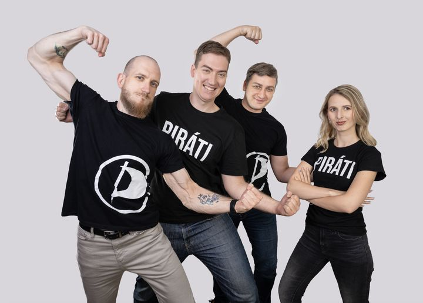

Čtyři kandidáti, kteří chtějí Plzeň 3 posouvat dál — s praxí ze stavebnictví, sociální práce, obchodu i veřejné správy.

Náš tým pro Plzeň 3.
1. místostarosta MO Plzeň 3, právník, 35 let
Uvolněný 1. místostarosta, právník, bývalý manažer v IT a bývalý voják. Na obvodě má na starosti stavby, investice, školky a sportoviště. Ne sliby, ale výsledky: chce, aby bylo jasné, kdo tu práci dělá a kdo za ni nese odpovědnost.
„Ten, co to dotáhne do konce.“
Sociální pracovnice, 26 let
V sociální práci vidí, že nejlepší pomoc přichází dřív, než se z problému stane krize — a stejně by podle ní mělo fungovat i město. Chce prosazovat dostupnou podporu pro rodiny, děti a mladé lidi a větší důraz na prevenci. Do komunální politiky přináší zkušenosti z přímé praxe.
„Pomoc má přijít dřív, než se stane krizí.“
Stavební projektant, 37 let
Vystudoval stavební inženýrství na ZČU a přes 15 let se věnuje rodinným i městským stavbám, rekonstrukcím a územnímu plánování. Do politiky přináší pohled projektanta — chce, aby se Plzeň rozvíjela promyšleně a nová výstavba respektovala své okolí, zeleň i potřeby obyvatel.
„Dobré město potřebuje promyšlený plán.“
Obchodní zástupce Multisport, 37 let
Dlouhodobě se věnuje sportu a vnímá, jak lidem v Plzni chybí prostor pro volný pohyb. Chce víc indoorových i outdoorových možností — lepší cyklostezky, venkovní hřiště a dětská hřiště. Méně suchého betonu, víc chuti do života.
„Méně betonu, víc chuti do života.“
Česká pirátská strana má v komunálních volbách vylosované číslo 1 pro Městský obvod Plzeň 3 a číslo 11 pro město Plzeň. Jeden křížek u čísla strany dá hlas celému týmu.
Rádi si s vámi domluvíme schůzku nebo krátký hovor.